L’histoire du vin de Cahors commence avec la conquête romaine dans la province qui, la dernière, fit sa soumission à César. En effet, n’en déplaise à Uderzo et Goscinny, pères du célèbre Astérix, le dernier village d’irréductibles gaulois était situé non en Bretagne, mais en Quercy et s’appelait Uxellodunum. Cependant, après la prise de cette place forte en - 51, la région se romanisa rapidement et sa capitale, Divona Cadurcorum, la future Cahors, se couvrit précocement de monuments somptueux avec amphithéâtre, thermes, aqueduc, etc., tandis que la culture de la vigne connaissait un essor sans précédent.
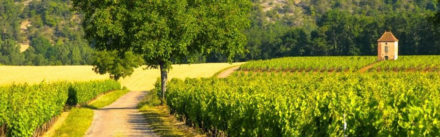On ne sait que peu de choses sur le vin de cette époque et il faut attendre la période médiévale pour trouver quelques anecdotes, comme cette mention du VIIe siècle faisant état de quelques barils envoyés par l’évêque de Cahors à son collègue de Verdun, en Lorraine, qui le remercia chaleureusement pour cette attention.
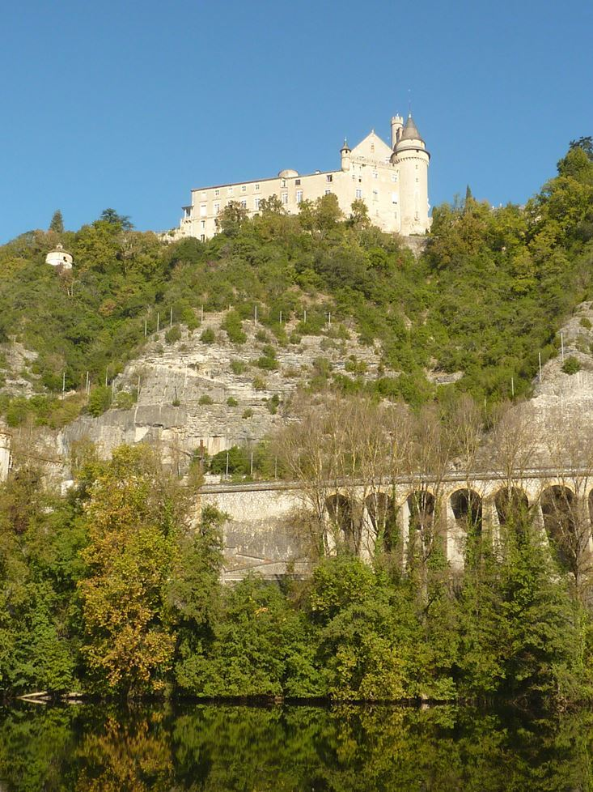 Le château de Mercuès surplombant le LotCe n’est cependant qu’à partir des années 1200 que les informations deviennent plus précises. La diffusion de la production viticole quercinoise fut alors favorisée par le dynamisme des marchands de la province, les cahorsins, qui établirent des relations commerciales dans toute l’Europe occidentale, jusqu’en Lettonie et sur les pourtours méditerranéens ; elle se développa tout particulièrement en Angleterre, bénéficiant du fait que la région de Cahors était directement reliée au duché d’Aquitaine et à sa capitale, Bordeaux, par les cours du Lot puis de la Garonne, et que le duc d’Aquitaine n’était autre que le roi d’Angleterre lui-même qui, de plus, possédait plusieurs seigneuries en Quercy.
À Londres, le vin de Cahors concurrençait sérieusement celui de Bordeaux et, même lorsque la guerre de Cent Ans enflamma toute la région, on continua à en exporter outre-Manche bien que les quantités produites aient considérablement diminué. Il n’était d’ailleurs pas uniquement vendu par des marchands quercinois, car des capitaines anglais, à l’instar du fameux Bertrucat d’Albret, en saisissaient de grandes quantités comme prises de guerre et se chargeaient de le vendre sur les marchés à des prix avantageux grâces aux exemptions fiscales accordées par le roi d’Angleterre.
Le conflit centenaire se terminant, la viticulture de la province reprit toute sa vigueur. A la Renaissance, sa réputation grandit encore grâce à plusieurs Quercinois qui en vantèrent les mérites, à l’exemple de Galiot de Genouillac, seigneur d’Assier et grand maître de l’artillerie de François Ier, qui la lui fit connaître ; séduit, le monarque fit planter des vignes quercinoises au château royal de Fontainebleau ; quant au poète Clément Marot, favori de François Ier et de Louis XII, il en chanta les louanges à plusieurs occasions.
Au XVIIe siècle, la production et la diffusion du vin de Cahors prit une nouvelle importance grâce à l’amélioration de la navigabilité de la rivière Lot : il était désormais beaucoup plus facile et rapide d’envoyer des tonneaux à Bordeaux. Ce faisant, les viticulteurs quercinois concurrencèrent de manière beaucoup plus intense leurs homologues du Bordelais, aussi ceux-ci profitèrent-ils de leur mainmise sur le port pour mettre en place de nombreux obstacles à leur commerce.
C’est vers cette époque que le vin de Cahors commença à s’introduire sur le marché russe de manière significative ; il y était peut-être déjà présent de manière anecdotique durant les périodes précédentes : arrivé avec des marchands quercinois en Crimée ou à Riga, il avait pu transiter jusqu’à Kiev, Novgorod ou Moscou. Au début du XVIIIe siècle, des commerçants russes en ramenaient dans leur patrie via l’océan atlantique et la mer Baltique, mais c’est le tsar Pierre Ier qui le popularisa dans son empire : sujet à des ulcères d’estomac, il avait trouvé dans le précieux liquide un remède qui le soulageait efficacement. Dès lors, le vin de Cahors fut régulièrement servi à sa table. Est-ce là que le patriarche de Moscou découvrit ce vin dont la robe rouge foncée, symbolisant le sang du Christ, résistait mieux à la dilution dans l’eau que ceux venant du Caucase ou de Moldavie ? On ne sait, mais toujours est-il qu’il devint rapidement le vin de messe officiel de l’église orthodoxe. Il convient dès à présent de préciser qu’il s’agissait d’un vin doux obtenu par cuisson du mou avec ajout de sucre et d’alcool, technique adoptée pour mieux lui faire supporter le long voyage du Quercy à Saint-Pétersbourg.
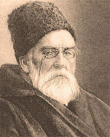Les besoins en vin des milliers d’églises russes firent que les exportations augmentèrent tout au long du XIXe siècle, atteignant des millions de litres, mais en 1865 l’arrivée d’un insecte américain se nourrissant de racines de vignes, le phylloxéra, remit tout en question : en quelques années, sur presque 60 000 hectares, la quasi-totalité du vignoble de Cahors disparut, laissant les producteurs dans la misère et les prêtres orthodoxe sans vin de messe.
La réaction russe fut assez rapide et, dès les années 1880, on augmenta les importations de vin en provenance de la région de Valencia, en Espagne, avant que les vignes plantées en Crimée ne commencent à donner en quantités suffisantes. Cette nouvelle production, correspondant aussi au nationalisme économique caractérisant le règne du tsar Alexandre III, devait beaucoup au prince Lev Sergueïevitch Galitzine ; c’est lui qui élabora les règles strictes d’élaboration du Cahors russe à partir de raisin de Crimée et présida, en 1902, le premier congrès des producteurs et vignerons russes. Le vin produit était toujours doux, chauffé et augmenté de sucre.
Buste du prince Galitzine à l'entrée des caves du domaine de Massandra
Après la révolution d’Octobre, outre la Crimée, la production de Кагор (« Kagor », traduction russe ancienne de « Cahors ») se développa en Moldavie et en Asie Centrale sous l’impulsion du nouveau pouvoir soviétique. Si, avec la baisse d’activité de l’église orthodoxe durant la période stalinienne, son utilité en tant que vin de messe décrut de pair, il resta un « vin de dessert » apprécié par l’ensemble de la population. Durant la Grande Guerre Patriotique, l’Armée Rouge en commanda de grandes quantités, en provenance d’Ouzbékistan notamment, pour les besoins de ses blessés hospitalisés et de ses officiers. Il resta ensuite un vin de consommation courante dont la production augmenta encore durant les années 1960 grâce à une politique volontariste dans ce domaine.
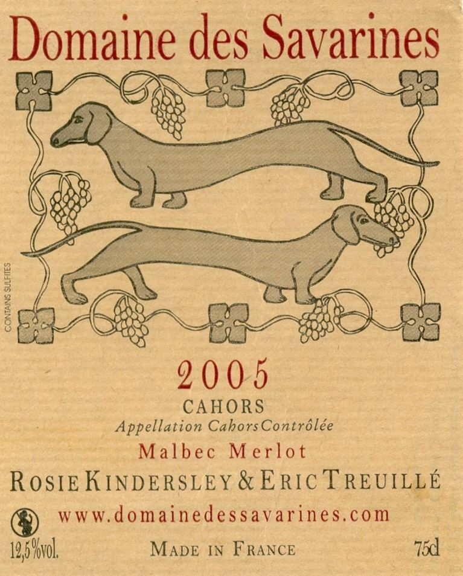 Étiquette d'un Cahors du domaine des SavarinesEn France, quelques années après la crise du phylloxéra, quelques vignerons relancèrent une modeste production de Cahors en utilisant un cépage local hybridé, le Malbec, résistant aux attaques des insectes américains, mais les quantités restèrent modestes et la qualité médiocre. Il fallut attendre 1947 pour que des efforts d’amélioration significatifs soient entrepris, même si l’aire cultivée, quelques milliers d’hectares, était loin d’être ce qu’elle était quatre-vingt ans plus tôt.
Un premier palier fut franchi en 1951, avec l’obtention du label VDQS (Vin Délimité de Qualité Supérieure) mais l’exploitation de ce succès fut compromise par les gels de 1956, à cause desquels de nombreux vignerons firent faillite.
Ceux qui subsistèrent poursuivirent néanmoins leur travail de régénération et, en 1971, le Cahors finit par obtenir le label AOC (Appellation d’Origine Contrôlée), qui marqua le début d’un nouvel et fructueux essor résolument orienté vers l’excellence.
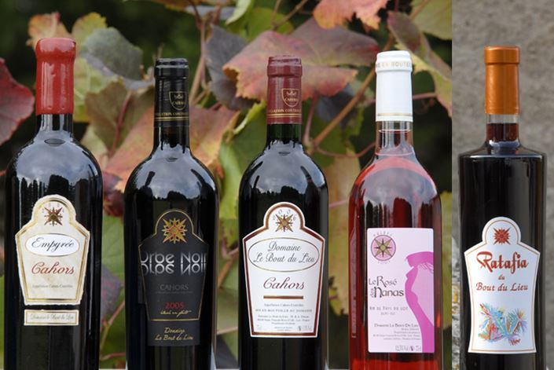 Bouteilles de Cahors du domaine
du Bout du LieuAujourd’hui, le vin de Cahors français est cultivé dans toute la vallée du Lot quercinoise en aval de Cahors et sur les rudes collines calcaires qui l’entourent, à partir de cépage Malbec pour au moins 70 %, ainsi que de Merlot et Tannat pour les 30 % restant. Après les vendanges et la période de vinification, le vin est élevé pendant un à trois ans.
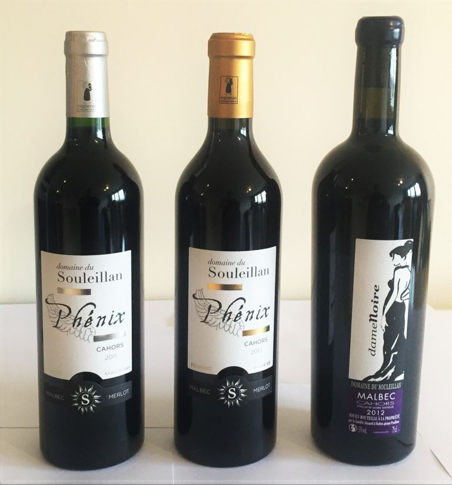Tirant au moins 11,5 % d’alcool, il peut ensuite être gardé jusqu’à 10 ans pour les meilleurs crus. Les exploitations productrices sont tailles variées, de quatre à soixante hectares, et sont donc particulièrement nombreuses. Bénéficiant de l’exceptionnelle richesse du patrimoine quercinois, beaucoup sont installées dans d’antiques châteaux plus ou moins anciens, à l’instar de Mercuès, Hauteserre, Chambert ou Lagrezette, pour ne citer qu’eux, tandis que la plupart des domaines ont pour sièges de belles fermes traditionnelles bâties en pierre calcaire, comme aux Savarines ou au Souleillan.
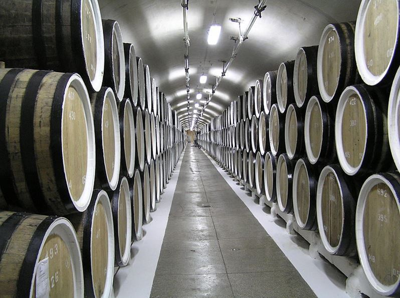
Vue des caves du domaine de Massandra
Le cousin russe est quant à lui issu de vignobles de Crimée, du Caucase, du Kouban et de Moldavie plantés de cépages Merlot, Saperavi, Cabernet Sauvignon ou même, comme le Cahors quercinois, de Malbec. Il est obtenu suite à un processus de chauffage du mou et d’ajout d’alcool et de sucre, ce qui permet d’obtenir un produit doux contenant aux alentours de 16 % d’alcool.
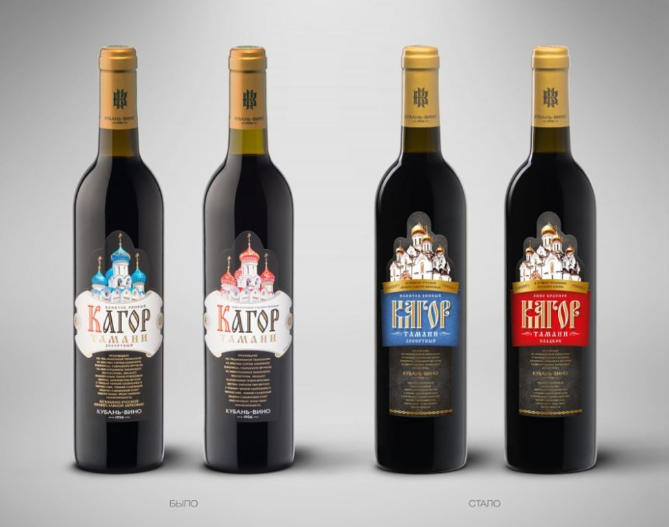
Bouteilles de Kagor de Kouban-Vino
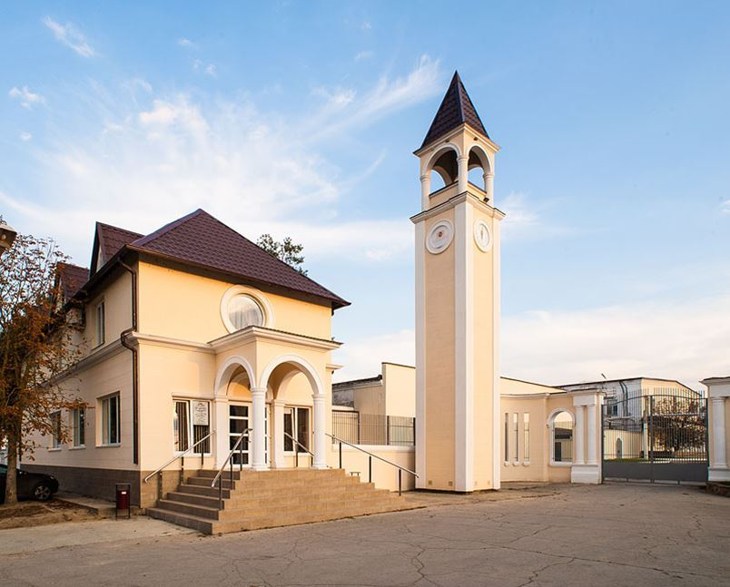
Le siège de Kouban Vino
Toutefois, les règles d’élaboration sont moins strictes que pour son cousin français et l’appellation Кагор recouvre des vins de types sensiblement différents. L’un des producteurs les plus connus est le domaine de Massandra, fondé en 1894 ; il s’agit en fait d’un grand complexe regroupant plusieurs exploitations sur plusieurs centaines d’hectares ; il est situé dans le sud de la Crimée, au bord de la mer Noire.
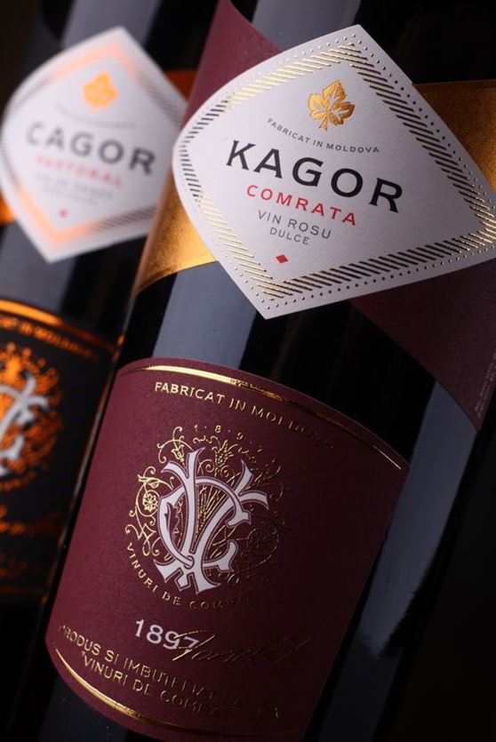
Étiquette d'un Kagor de Vinuri de Comrat
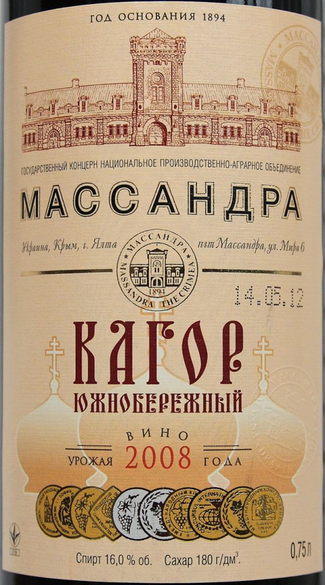
Étiquette d'un Kagor du domaine de Massandra
Il produit plusieurs Кагор, mais ceux-ci ne constituent qu’une partie de sa production, vinifiée dans ses immenses caves creusées dans la montagne. Parmi les autres sociétés productrices, on peut citer Kouban-Vino, installée dans la région de Krasnodar, connue notamment pour son « École du Vin », destinée à former les acheteurs, ou encore l’entreprise Vinuri de Comrat, sise en Moldavie.
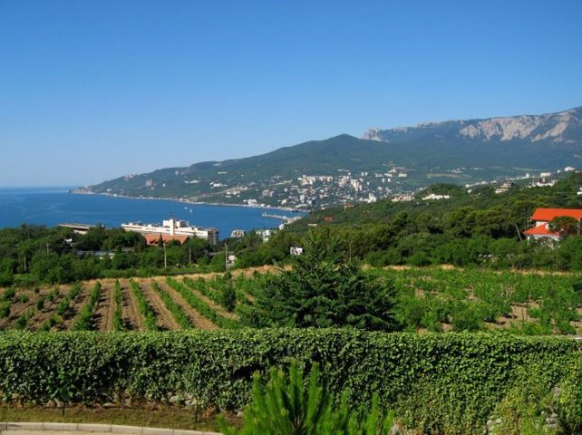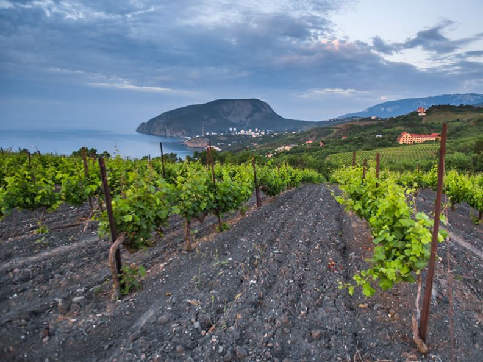
Vignobles en Crimée, au bord de la mer Noire
Ainsi, il apparaît finalement que les vins de Cahors français et russes sont les descendants d’une même tradition viticole : le premier est produit sur le même territoire et avec le même cépage que son ancêtre du XIXe siècle, tandis que le second en a gardé, bien qu’évoluée, la technique initialement élaborée pour son transport et le caractère doux qui en résultait. Pourtant, ces deux cousins se rencontrent rarement sur les étals des marchands et sur les tables : comme vin sucré, le Кагор est très peu connu en France, tandis qu’en Russie, la réputation du vin de Cahors reste confidentielle.
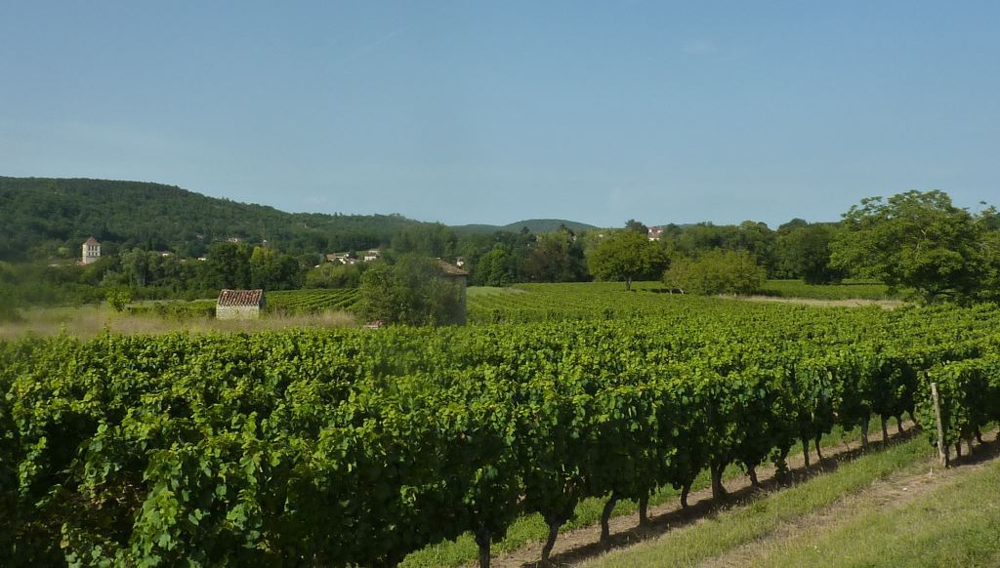
Vignoble de Cahors à Douelle
Pourtant, on peut imaginer un repas où, en apéritif, du Кагор accompagnerait quelques zakouskis, puis, en plat de résistance, du Cahors pour faire passer des confits de canard avec des pommes de terre sarladaises.
Partager cette page